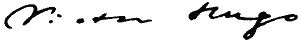

|

Je payai le pêcheur qui passa son chemin,
Et je pris cette bête horrible dans ma main;
C'était un être obscur comme l'onde en apporte,
Qui, plus grand, serait hydre, et, plus petit, cloporte;
Sans forme, comme l'ombre, et, comme Dieu, sans nom.
Il ouvrait une bouche affreuse, un noir moignon
Sortait de son écaille; il tâchait de me mordre;
Dieu, dans l'immensité formidable de l'ordre,
Donne une place sombre à ces spectres hideux;
Il tâchait de me mordre, et nous luttions tous deux;
Ses dents cherchaient mes doigts qu'effrayait leur approche;
L'homme qui me l'avait vendu tourna la roche;
Comme il disparaissait, le crabe me mordit;
Je lui dis: - Vis! et sois béni, pauvre maudit! -
Et je le rejetai dans la vague profonde,
Afin qu'il allât dire à l'océan qui gronde,
Et qui sert au soleil de vase baptismal,
Que l'homme rend le bien au monstre pour le mal.
Jersey, Grève d'Azette, juillet 1855.
Paroles Sur La Dune
Maintenant que mon temps décroît comme un flambeau,
Que mes tâches sont terminées;
Maintenant que voici que je touche au tombeau
Par les deuils et par les années,
Et qu'au fond de ce ciel que mon essor rêva,
Je vois fuir, vers l'ombre entraînées,
Comme le tourbillon du passé qui s'en va,
Tant de belles heures sonnées;
Maintenant que je dis: - Un jour, nous triomphons;
Le lendemain, tout est mensonge! -
Je suis triste, et je marche au bord des flots profonds,
Courbé comme celui qui songe.
Je regarde, au-dessus du mont et du vallon,
Et des mers sans fin remuées,
S'envoler sous le bec du vautour aquilon,
Toute la toison des nuées;
J'entends le vent dans l'air, la mer sur le récif,
L'homme liant la gerbe mûre;
J'écoute, et je confronte en mon esprit pensif
Ce qui parle à ce qui murmure;
Et je reste parfois couché sans me lever
Sur l'herbe rare de la dune.
Jusqu'à l'heure où l'on voit apparaître et rêver
Les yeux sinistres de la lune.
Elle monte, elle jette un long rayon dormant
A l'espace, au mystère, au gouffre;
Et nous nous regardons tous les deux fixement,
Elle qui brille et moi qui souffre.
Où donc s'en sont allés mes jours évanouis?
Est-il quelqu'un qui me connaisse?
Ai-je encor quelque chose en mes yeux éblouis,
De la clarté de ma jeunesse?
Tout s'est-il envolé? Je suis seul, je suis las;
J'appelle sans qu'on me réponde;
O vents! ô flots! ne suis-je aussi qu'un souffle, hélas!
Hélas! ne suis-je aussi qu'une onde?
Ne verrai-je plus rien de tout ce que j'aimais?
Au dedans de moi le soir tombe.
O terre, dont la brume efface les sommets,
Suis-je le spectre, et toi la tombe?
Ai-je donc vidé tout, vie, amour, joie, espoir?
J'attends, je demande, j'implore;
Je penche tour à tour mes urnes pour avoir
De chacune une goutte encore!
Comme le souvenir est voisin du remord!
Comme à pleurer tout nous ramène!
Et que je te sens froide en te touchant, ô mort,
Noir verrou de la porte humaine!
Et je pense, écoutant gémir le vent amer,
Et l'onde aux plis infranchissables;
L'été rit, et l'on voit sur le bord de la mer
Fleurir le chardon bleu des sables.
5 août 1854, anniversaire de mon arrivée à Jersey.
Hélas! tout est sépulcre. On en sort, on y tombe:
La nuit est la muraille immense de la tombe.
Les astres, dont luit la clarté,
Orion, Sirius, Mars, Jupiter, Mercure,
Sont les cailloux qu'on voit dans ta tranchée obscure,
O sombre fosse Éternité!
Une nuit, un esprit me parla dans un rêve,
Et me dit: - Je suis aigle en un ciel où se lève
Un soleil qui t'est inconnu.
J'ai voulu soulever un coin du vaste voile;
J'ai voulu voir de près ton ciel et ton étoile;
Et c'est pourquoi je suis venu;
Et, quand j'ai traversé les cieux grands et terribles,
Quand j'ai vu le monceau des ténèbres horribles
Et l'abîme énorme où l'oeil fuit,
Je me suis demandé si cette ombre où l'on souffre
Pourrait jamais combler ce puits, et si ce gouffre
Pourrait contenir cette nuit!
Et moi, l'aigle lointain, épouvanté, j'arrive.
Et je crie, et je viens m'abattre sur ta rive,
Près de toi, songeur sans flambeau.
Connais-tu ces frissons, cette horreur, ce vertige,
Toi, l'autre aigle de l'autre azur? - Je suis, lui dis-je,
L'autre ver de l'autre tombeau.
Au dolmen de la Corbière, juin 1855.
Nomen, Numen, Lumen
Quand il eut terminé, quand les soleils épars,
Éblouis, du chaos montant de toutes parts,
Se furent tous rangés à leur place profonde,
Il sentit le besoin de se nommer au monde;
Et l'être formidable et serein se leva;
Il se dressa sur l'ombre et cria: JÉHOVAH!
Et dans l'immensité ces sept lettres tombèrent;
Et ce sont, dans les cieux que nos yeux réverbèrent,
Au-dessus de nos fronts tremblants sous leur rayon,
Les sept astres géants du noir septentrion.
Minuit, au dolmen du Faldouet, mars 1855.
Un spectre m'attendait dans un grand angle d'ombre,
Et m'a dit:
- Le muet habite dans le sombre.
L'infini rêve, avec un visage irrité.
L'homme parle et dispute avec l'obscurité,
Et la larme de l'oeil rit du bruit de la bouche.
Tout ce qui vous emporte est rapide et farouche.
Sais-tu pourquoi tu vis? sais-tu pourquoi tu meurs?
Les vivants orageux passent dans les rumeurs,
Chiffres tumultueux, flot de l'océan Nombre,
Vous n'avez rien à vous qu'un souffle dans de l'ombre;
L'homme est à peine né, qu'il est déjà passé,
Et c'est avoir fini que d'avoir commencé.
Derrière le mur blanc, parmi les herbes vertes,
La fosse obscure attend l'homme, lèvres ouvertes.
La mort est le baiser de la bouche tombeau.
Tâche de faire un peu de bien, coupe un lambeau
D'une bonne action dans cette nuit qui gronde;
Ce sera ton linceul dans la terre profonde.
Beaucoup s'en sont allés qui ne reviendront plus
Qu'à l'heure de l'immense et lugubre reflux;
Alors, on entendra des cris. Tâche de vivre;
Crois. Tant que l'homme vit, Dieu pensif lit son livre.
L'homme meurt quand Dieu fait au coin du livre un pli.
L'espace sait, regarde, écoute. Il est rempli
D'oreilles sous la tombe, et d'yeux dans les ténèbres.
Les morts ne marchant plus, dressent leurs pieds funèbres;
Les feuilles sèches vont et roulent sous les cieux.
Ne sens-tu pas souffler le vent mystérieux?
Au dolmen de Rozel, avril 1853.
Ibo
Dites, pourquoi, dans l'insondable
Au mur d'airain,
Dans l'obscurité formidable
Du ciel serein,
Pourquoi, dans ce grand sanctuaire
Sourd et béni,
Pourquoi, sous l'immense suaire
De l'infini,
Enfouir vos lois éternelles
Et vos clartés?
Vous savez bien que j'ai des ailes,
O vérités!
Pourquoi vous cachez-vous dans l'ombre
Qui nous confond?
Pourquoi fuyez-vous l'homme sombre
Au vol profond?
Que le mal détruise ou bâtisse,
Rampe ou soit roi,
Tu sais bien que j'irai, Justice,
J'irai vers toi!
Beauté sainte, Idéal qui germes
Chez les souffrants,
Toi par qui les esprits sont fermes
Et les coeurs grands,
Vous le savez, vous que j'adore,
Amour, Raison,
Qui vous levez comme l'aurore
Sur l'horizon,
Foi, ceinte d'un cercle d'étoiles,
Droit, bien de tous,
J'irai, Liberté qui te voiles,
J'irai vers vous!
Vous avez beau, sans fin, sans borne
Lueurs de Dieu,
Habiter la profondeur morne
Du gouffre bleu,
Ame à l'abîme habituée
Dès le berceau,
Je n'ai pas peur de la nuée;
Je suis oiseau.
Je suis oiseau comme cet être
Qu'Amos rêvait,
Que saint Marc voyait apparaître
A son chevet,
Qui mêlait sur sa tête fière,
Dans les rayons,
L'aile de l'aigle à la crinière
Des grands lions.
J'ai des ailes. J'aspire au faîte;
Mon vol est sûr;
J'ai des ailes pour la tempête
Et pour l'azur.
Je gravis les marches sans nombre.
Je veux savoir;
Quand la science serait sombre
Comme le soir!
Vous savez bien que l'âme affronte
Ce noir degré,
Et que, si haut qu'il faut qu'on monte,
J'y monterai!
Vous savez bien que l'âme est forte
Et ne craint rien
Quand le souffle de Dieu l'emporte!
Vous savez bien
Que j'irai jusqu'aux bleus pilastres,
Et que mon pas,
Sur l'échelle qui monte aux astres,
Ne tremble pas!
L'homme en cette époque agitée,
Sombre océan,
Doit faire comme Prométhée
Et comme Adam.
Il doit ravir au ciel austère
L'éternel feu;
Conquérir son propre mystère,
Et voler Dieu.
L'homme a besoin, dans sa chaumière,
Des vents battu,
D'une loi qui soit sa lumière
Et sa vertu.
Toujours ignorance et misère!
L'homme en vain fuit,
Le sort le tient; toujours la serre!
Toujours la nuit!
Il faut que le peuple s'arrache
Au dur décret,
Et qu'enfin ce grand martyr sache
Le grand secret!
Déjà l'amour, dans l'ère obscure
Qui va finir,
Dessine la vague figure
De l'avenir.
Les lois de nos destins sur terre,
Dieu les écrit;
Et, si ces lois sont le mystère,
Je suis l'esprit.
Je suis celui que rien n'arrête
Celui qui va,
Celui dont l'âme est toujours prête
A Jéhovah;
Je suis le poëte farouche,
L'homme devoir,
Le souffle des douleurs, la bouche
Du clairon noir;
Le rêveur qui sur ses registres
Met les vivants,
Qui mêle des strophes sinistres
Aux quatre vents;
Le songeur ailé, l'âpre athlète
Au bras nerveux,
Et je traînerais la comète
Par les cheveux.
Donc, les lois de notre problème,
Je les aurai;
J'irai vers elles, penseur blême,
Mage effaré!
Pourquoi cacher ces lois profondes?
Rien n'est muré.
Dans vos flammes et dans vos ondes
Je passerai;
J'irai lire la grande bible;
J'entrerai nu
Jusqu'au tabernacle terrible
De l'inconnu,
Jusqu'au seuil de l'ombre et du vide,
Gouffres ouverts
Que garde la meute livide
Des noirs éclairs,
Jusqu'aux portes visionnaires
Du ciel sacré;
Et, si vous aboyez, tonnerres,
Je rugirai.
Au dolmen de Rozel, janvier 1853.
Apparition
Je vis un ange blanc qui passait sur ma tête;
Son vol éblouissant apaisait la tempête,
Et faisait taire au loin la mer pleine de bruit.
- Qu'est-ce que tu viens faire, ange, dans cette nuit?
Lui dis-je. Il répondit: - Je viens prendre ton âme.
Et j'eus peur, car je vis que c'était une femme;
Et je lui dis, tremblant et lui tendant les bras:
- Que me restera-t-il? car tu t'envoleras.
Il ne répondit pas; le ciel que l'ombre assiége
S'éteignait... - Si tu prends mon âme, m'écriai-je,
Où l'emporteras-tu? montre-moi dans quel lieu.
Il se taisait toujours. - O passant du ciel bleu,
Es-tu la mort? lui dis-je, ou bien es-tu la vie?
Et la nuit augmentait sur mon âme ravie,
Et l'ange devint noir, et dit: - Je suis l'amour.
Mais son front sombre était plus charmant que le jour,
Et je voyais, dans l'ombre où brillaient ses prunelles,
Les astres à travers les plumes de ses ailes.
Jersey, septembre 1855.
Pasteurs et Troupeaux
À Madame Louise C.
Le vallon où je vais tous les jours est charmant;
Serein, abandonné, seul sous le firmament,
Plein de ronces en fleurs; c'est un sourire triste.
Il vous fait oublier que quelque chose existe,
Et, sans le bruit des champs remplis de travailleurs,
On ne saurait plus là si quelqu'un vit ailleurs.
Là, l'ombre fait l'amour; l'idylle naturelle
Rit; le bouvreuil avec le verdier s'y querelle,
Et la fauvette y met de travers son bonnet;
C'est tantôt l'aubépine et tantôt le genêt;
De noirs granits bourrus, puis des mousses riantes;
Car Dieu fait un poëme avec des variantes;
Comme le vieil Homère, il rabâche parfois,
Mais c'est avec les fleurs, les monts, l'onde et les bois!
Une petite mare est là, ridant sa face,
Prenant des airs de flot pour la fourmi qui passe,
Ironie étalée au milieu du gazon,
Qu'ignore l'océan grondant à l'horizon.
J'y rencontre parfois sur la roche hideuse
Un doux être; quinze ans, yeux bleus, pieds nus, gardeuse
De chèvres, habitant, au fond d'un ravin noir,
Un vieux chaume croulant qui s'étoile le soir;
Ses soeurs sont au logis et filent leur quenouille;
Elle essuie aux roseaux ses pieds que l'étang mouille;
Chèvres, brebis, béliers, paissent; quand, sombre esprit,
J'apparais, le pauvre ange a peur, et me sourit;
Et moi, je la salue, elle étant l'innocence.
Ses agneaux, dans le pré plein de fleurs qui l'encense,
Bondissent, et chacun, au soleil s'empourprant,
Laisse aux buissons, à qui la bise le reprend,
Un peu de sa toison, comme un flocon d'écume.
Je passe; enfant, troupeau, s'effacent dans la brume;
Le crépuscule étend sur les longs sillons gris
Ses ailes de fantôme et de chauve-souris;
J'entends encore au loin dans la plaine ouvrière
Chanter derrière moi la douce chevrière,
Et, là-bas, devant moi, le vieux gardien pensif
De l'écume, du flot, de l'algue, du récif,
Et des vagues sans trêve et sans fin remuées,
Le pâtre promontoire au chapeau de nuées,
S'accoude et rêve au bruit de tous les infinis,
Et dans l'ascension des nuages bénis,
Regarde se lever la lune triomphale,
Pendant que l'ombre tremble, et que l'âpre rafale
Disperse à tous les vents avec son souffle amer
La laine des moutons sinistres de la mer.
Jersey, Grouville, avril 1855.
O strophe du poëte, autrefois, dans les fleurs,
Jetant mille baisers à leurs mille couleurs,
Tu jouais, et d'avril tu pillais la corbeille,
Papillon pour la rose et pour la ruche abeille,
Tu semais de l'amour et tu faisais du miel;
Ton âme bleue était presque mêlée au ciel;
Ta robe était d'azur et ton oeil de lumière;
Tu criais aux chansons, tes soeurs: - Venez chaumière,
-Hameau, ruisseau, forêt, tout chante. L'aube a lui! -
Et, douce, tu courais et tu riais. Mais lui,
Le sévère habitant de la blême caverne
Qu'en haut le jour blanchit, qu'en bas rougit l'Averne,
Le poëte qu'ont fait avant l'heure vieillard
La douleur dans la vie et le drame dans l'art,
Lui, le chercheur du gouffre obscur, le chasseur d'ombres,
Il a levé la tête un jour hors des décombres,
Et t'a saisie au vol dans l'herbe et dans les blés,
Et, malgré tes effrois et tes cris redoublés,
Toute en pleurs, il t'a prise à l'idylle joyeuse;
Il t'a ravie aux champs, à la source, à l'yeuse,
Aux amours dans les bois près des nids palpitants;
Et maintenant, captive et reine en même temps,
Prisonnière au plus noir de son âme profonde,
Parmi les visions qui flottent comme l'onde,
Sous son crâne à fois céleste et souterrain,
Assise, et t'accoudant sur un trône d'airain,
Voyant dans ta mémoire, ainsi qu'une ombre vaine,
Fuir l'éblouissement du jour et de la plaine,
Par le maître gardée, et calme et sans espoir,
Tandis que, près de toi, les drames, groupe noir,
Des sombres passions feuillettent le registre,
Tu rêves dans sa nuit, Proserpine sinistre.
Jersey, novembre 1854.
Le Pont
J'avais devant les yeux les ténèbres. L'abîme
Qui n'a pas de rivage et qui n'a pas de cime,
Était là, morne, immense; et rien n'y remuait.
Je me sentais perdu dans l'infini muet.
Au fond, à travers l'ombre, impénétrable voile,
On apercevait Dieu comme une sombre étoile.
Je m'écriai: - Mon âme, ô mon âme! il faudrait,
Pour traverser ce gouffre où nul bord n'apparaît,
Et pour qu'en cette nuit jusqu'à ton Dieu tu marches,
Bâtir un pont géant sur des millions d'arches.
Qui le pourra jamais! Personne! ô deuil! effroi!
Pleure! - Un fantôme blanc se dressa devant moi
Pendant que je jetai sur l'ombre un oeil d'alarme,
Et ce fantôme avait la forme d'une larme;
C'était un front de vierge avec des mains d'enfant;
Il ressemblait au lys que la blancheur défend;
Ses mains en se joignant faisaient de la lumière.
Il me montra l'abîme où va toute poussière,
Si profond, que jamais un écho n'y répond;
Et me dit: - Si tu veux je bâtirai le pont.
Vers ce pâle inconnu je levai ma paupière.
- Quel est ton nom? lui dis-je. Il me dit: - La prière.
Jersey, décembre 1852.
Un jour, le morne esprit, le prophète sublime
Qui rêvait à Patmos,
Et lisait, frémissant, sur le mur de l'abîme
De si lugubres mots,
Dit à son aigle:- O monstre! il faut que tu m'emportes.
Je veux voir Jéhovah. -
L'aigle obéit. Des cieux ils franchirent les portes;
Enfin, Jean arriva;
Il vit l'endroit sans nom dont nul archange n'ose
Traverser le milieu,
Et ce lieu redoutable était plein d'ombre, à cause
De la grandeur de Dieu.
Jersey, septembre 1855.
Éclaircie
L'Océan resplendit sous sa vaste nuée.
L'onde, de son combat sans fin exténuée,
S'assoupit, et, laissant l'écueil se reposer,
Fait de toute la rive un immense baiser.
On dirait qu'en tous lieux, en même temps, la vie
Dissout le mal, le deuil, l'hiver, la nuit, l'envie,
Et que le mort couché dit au vivant debout:
Aime! et qu'une âme obscure, épanouie en tout,
Avance doucement sa bouche vers nos lèvres.
L'être, éteignant dans l'ombre et l'extase ses fièvres,
Ouvrant ses flancs, ses seins, ses yeux, ses coeurs épars,
Dans ses pores profonds reçoit de toutes parts
La pénétration de la sève sacrée.
La grande paix d'en haut vient comme une marée.
Le brin d'herbe palpite aux fentes du pavé;
Et l'âme a chaud. On sent que le nid est couvé.
L'infini semble plein d'un frisson de feuillée.
On croit être à cette heure où la terre éveillée
Entend le bruit que fait l'ouverture du jour,
Le premier pas du vent, du travail, de l'amour,
De l'homme, et le verrou de la porte sonore,
Et le hennissement du blanc cheval aurore.
Le moineau d'un coup d'aile, ainsi qu'un fol esprit,
Vient taquiner le flot monstrueux qui sourit;
L'air joue avec la mouche et l'écume avec l'aigle;
Le grave laboureur fait ses sillons et règle
La page où s'écrira le poëme des blés;
Des pêcheurs sont là-bas sous un pampre attablés;
L'horizon semble un rêve éblouissant où nage
L'écaille de la mer, la plume du nuage,
Car l'Océan est hydre et le nuage oiseau.
Une lueur, rayon vague, part du berceau
Qu'une femme balance au seuil d'une chaumière,
Dore les champs, les fleurs, l'onde et devient lumière
En touchant un tombeau qui dort près du clocher.
Le jour plonge au plus noir du gouffre, et va chercher
L'ombre, et la baise au front sous l'eau sombre et hagarde.
Tout et doux, calme, heureux, apaisé; Dieu regarde.
Marine-Terrace, juillet 1855.
|